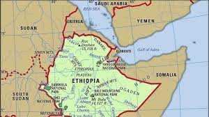
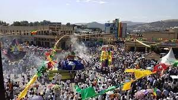

Gondar
 Gondar Castle
Gondar was founded by Emperor Fasiledes around the year 1635 and grew as an agricultural and market town. ... Fasiledes had the pool filled in and built his castle on that same site. The emperor also built a total of seven churches; the first two, Fit Mikael and Fit Abbo, were built to end local epidemics.
Gondar ,the 17th century capital of Ethiopia , is located about 748 km Northwestern of Addis Ababa. The city is well known for its Castles and churches . Its medieval glory is reflected in the famous castles of the emperors of the time, especially that of Emperor Fasiledes.
Gondar is also a noted center of ecclesiastical learning of the Ethiopian Orthodox Tewahedo Church and known for having 44 churches – for many years more than any other settlement in Ethiopia. Gondar and its surrounding countryside constitute the homeland of most Ethiopian Jews.
The origins of the Fasil Ghebbi can be found in the old tradition of the Ethiopian emperors to travel around their possessions, living off the produce of the peasants and dwelling in tents. Reflecting this connection, this precinct was frequently referred to as a katama ("camp" or "fortified settlement") or makkababya, the name applied to the imperial camp in the Royal Chronicle of Baeda Maryam.
Emperor Fasiledes broke with this tradition of progressing through the territories and founded the city of Gondar as his capital; its relative permanence makes the city historically important. Within the capital, he commanded the construction of an imposing edifice, the Fasil Gemb or Fasiledes castle. The area around the Fasil Gemb was delineated by a wall with numerous gates. Subsequent emperors built their own structures, many of which survive either in whole or part today.[3] Visiting the Fasil Ghebbi in the late 1950s, Thomas Pakenham observed that "dotted among the palaces are what remains of the pavilions and kiosks of the imperial city".The original buildings were influenced by Nubian, Arab, and Hindu architectural design, with later Baroque Architectural styling introduced by Jesuit Missionaries[5]
Fasil Ghebbi covers an area of about 70,000 square meters. To its south lies Adababay, the market place of Gondar, where imperial proclamations were made, troops presented, and criminals executed; it is currently a city park.[6] Dawit's Hall is in the northern part of the enclosure, adjacent to the building attributed to Bakaffa and the church of Asasame Qeddus Mikael. Often referred to as the "House of Song", Munro-Hay notes that this may be due to a misreading of the Amharic zofan bet ("House of the Divan" or "House of the Throne") as zafan bet ("House of Song"). Munro-Hay describes it as a "substantial one-story building with a round tower at the southeast corner", with traces of a smaller round tower at the northeast corner and traces of a square tower at the northwest corner "most of which has collapsed." The interior of the building is a single long hall, which "the usual arched windows and doorways provided light and access". As of 2002, Dawit's Hall lacks a roof.
Fasil Ghebbi is enclosed by a curtain wall which is pierced by twelve gates. These are, in counter-clockwise order: Fit Ber (also called Jan Tekle Ber) opening onto Adababay; Wember Ber (Gate of the Judges); Tazkaro Ber (Gate of Funeral Commemoration), which had a bridge destroyed by fighting during the reign of Iyasu II; Azaj Tequre Ber (Gate of Azaj Tequre), which once was connected by a bridge to Adababay Tekle Haymanot church; Adenager Ber (Gate of the Spinners), which was linked by a bridge to Qeddus Rafael church in the weaver's section of Gondar; Qwali Ber (Gate of the Queen's Attendants), next to the modern entrance to Elfin Giyorgis church inside the Enclosure; Imbilta Ber (Gate of the Musicians); Elfign Ber (Gate of the Privy Chamber), which gave access to the private apartments of the Fasil Ghebbi; Balderas Ber (Gate of the Commander of the Cavalry); Ras Ber (Gate of the Ras), also known as Qwarenyoch Ber (Gate of the Qwara people); Ergeb Ber (Gate of Pigeons), also known as Kechin Ashawa Ber (Gate of the Gifts); Inqoye Ber (Gate of Princess Inqoye, the mother of Empress Mentewab; and Gimjabet Mariyam Ber (Gate of the Treasury of Mary), which leads to the churchyard of Gimjabet Mariyam church.
Gondar Castle
Debre Birhan Selassie Church
Debre Birhan Selassie Church is not much to look at; the genuine treasures rest inside. Built of stone and contained under a two-tiered thatched roof. Standing guard over the church are 12 circular towers connected by a stone wall with large arched wooden gates. The interior walls depict biblical scenes, Saints, and Icons of the Holy Trinity (three identical men with halos). The Crucifixion resides prominently above the two interior doors leading to the stall from which Emperor Eyasu II and his mother would occupy during ceremonies. At first entry, there are so many sights vying for your attention, but mine went straight to the ceiling covered in the faces of 135 cherubs. Take your time and explore. While it is not a big space, discoveries are waiting all around.
Timket In Gondar
One of the most important festivals on the Ethiopian calendar, Timket (Timkat) is celebrated across the country. Tourists in Ethiopia during Timket are treated to 3 days of festivities. Timket is an Orthodox Christian occasion to mark the baptism of Jesus Christ in the River Jordan. People travel to Ethiopia to take part in Timket which involves processions, singing, and dancing. Spending time in Ethiopia is an excellent way for tourists to get an insight into the religion, culture, and traditions of the African nation.
When is the Timket Festival?
Timket is on 19th of January (20th on leap years) preparations, called Ketera begin the day and the full event lasts for 3 days. It is celebrated on this date to correspond with the 11th day of Terr.In 2021, Timket is on Tuesday, January 19th. Tourists should be aware that Timket is a public holiday, and most businesses remain closed. January is one of the best months to visit Ethiopia with warm, sunny weather and low rainfall. Leddet, Ethiopian Christmas, also takes place this month, on the 7th January.
Debrebirhan Church Interiors
How is Timket Celebrated?
Timket commemorates Christ’s baptism and takes place over 3 days. The most important day is the 19th of January, and this is when the blessing of water and reaffirming of baptism vows to take place.
Timket Festivity at Gondar